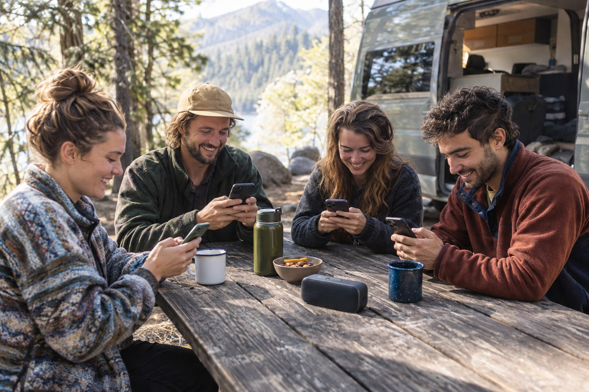
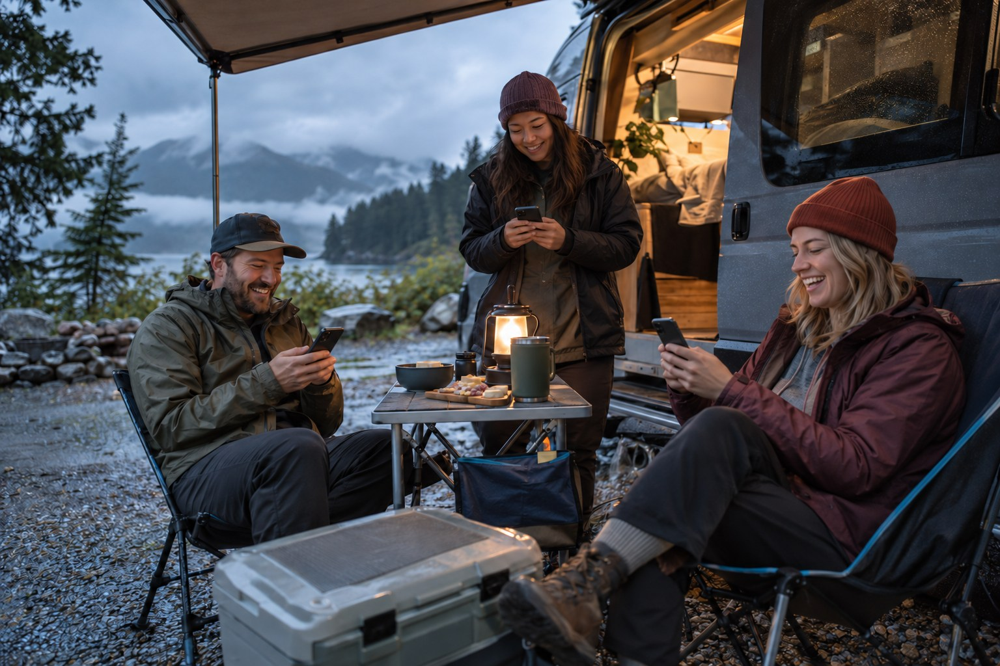

Beebo outside / four camp moments
Picture more ways to enjoy camp together.
Rain on the roof. A lake at sunset. One more round before bed. These generated scenes show what Beebo could bring to the trip—and what still needs testing.
Explore the scenes
The big night in
A tent becomes a tiny theater.
Picture a portable projector, a screen inside the dry tent and friends watching together while rain taps on the roof. The phones around the group suggest front, centre and rear sound positions; the rugged radio suggests the low end.
This particular 5.1-style arrangement is a concept, not a tested promise. Beebo’s Windows movie-phone-speaker beta has passed simulation and single-computer measurements, but not a real-phone campsite test. Routing a subwoofer channel to an arbitrary jobsite radio has not been verified. Phone speakers alone cannot reproduce deep bass.
Read the actual movie-speaker test statusOne chair. One screen. The whole evening.
A quieter moment by the water, with your own phone in hand and your own choice of what to watch or hear.

Together, with room for every screen.
Each person has a phone. The scene imagines a group activity where everyone can follow along from their own place at the table.

Three phones. One shared laugh.
Under the awning, each friend follows their own phone. The game scenario is an illustration; live group-game paths still need device testing.
What is real, and what is pictured
The idea is exciting. The test record stays honest.
Observed on real phones
On September 30, an S24 Ultra hosted a Campsite Mode session and an S9+ joined over home Wi-Fi. The guest saw an empty shared library and the host saw one connected guest. No movie or game was played in that session; the exact build was not recorded.
Still to verify
Projection in a tent; movie audio routed to several real phones; channel timing around a group; a jobsite radio as bass; shared-video playback on a guest phone; and group-game sessions on these devices.
All four images on this page are AI-generated photorealistic concepts, not documentary photographs, real users, real Beebo screenshots or proof of hardware compatibility. Follow electrical and weather safety guidance for your equipment.